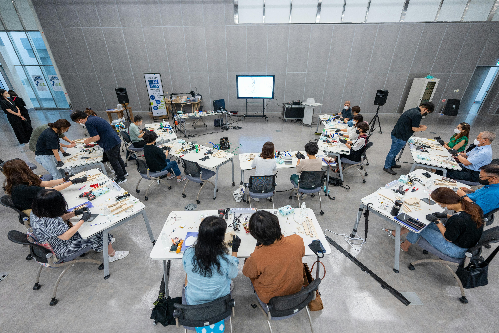

IoT, Consultancy & Training Services
Practical technology services designed to improve efficiency, automate processes, enhance monitoring and control, and build future-ready technical skills.
IoT-Based Optimized Solutions
We design and develop Internet of Things solutions that help organizations improve efficiency, automate processes, and enhance monitoring and control capabilities.
- Customer-specific solution design
- Monitoring and control capabilities
- Process automation support
- Scalable and reliable architectures
- Cost-effective implementation planning
IoT Application Consultancy
We support businesses, institutions, and organizations in adopting and implementing IoT technologies with practical guidance from concept to deployment.
- Solution design and feasibility review
- System architecture planning
- Technology selection support
- Deployment strategy and best practices
- IoT integration guidance
Skill-Based Training Programs
We promote technical excellence through industry-oriented programs focused on emerging technologies, practical applications, and hands-on learning.
- Programs for students and professionals
- Hands-on learning experiences
- Emerging technology awareness
- Practical application focus
- Organization-specific training support
Prehri Deployment Support
We help users evaluate and deploy Prehri, our optimized safety solution for rolling shutters, with attention to existing shutter infrastructure.
- Existing shutter system review
- Minimal-modification integration planning
- Safety mechanism implementation support
- Risk reduction and usability focus
- Cost-effective upgrade pathway
Custom IoT Solution Development
When a standard approach is not enough, we work with customers to understand specific requirements and create technology-enabled solutions around them.
- Requirement discovery
- Solution architecture
- Prototype planning
- Monitoring and automation workflows
- Scalability and reliability review
Implementation Guidance
Our consultancy-first approach helps customers move thoughtfully from problem statement to practical deployment and ongoing improvement.
- Use-case scoping
- Technology roadmap support
- Deployment planning
- Best-practice documentation
- Training and knowledge transfer
How We Deliver
A practical 4-phase approach for turning requirements into working IoT-enabled solutions.
Discovery & Scoping
We understand the challenge, safety need, operational context, and expected outcome.
Solution Design
We define the architecture, technology choices, integration path, and implementation plan.
Implementation
We support setup, integration, training, and validation against the intended use case.
Optimize & Improve
We refine the solution for reliability, usability, cost-effectiveness, and future scaling.


Solutions Across Use Cases
Businesses
IoT adoption, process automation, and operational monitoring for business needs.
Industries
Technology-enabled safety, productivity, monitoring, and control improvements.
Institutions
Consultancy and training support for practical technology adoption.
Shutter Infrastructure
Prehri safety upgrades for existing rolling shutter systems.
Students & Professionals
Skill-based training programs for current and emerging technologies.
Organizations
Customized programs and IoT guidance aligned to organizational goals.
Safety-Critical Operations
Practical upgrades that reduce potential risks and improve user confidence.
Connected Futures
Technology-driven solutions that contribute to safer and smarter systems.
Common Questions
Let's Build Your
IoT Strategy
Discuss Prehri, IoT solution design, consultancy, or skill-based training with SensorMind.